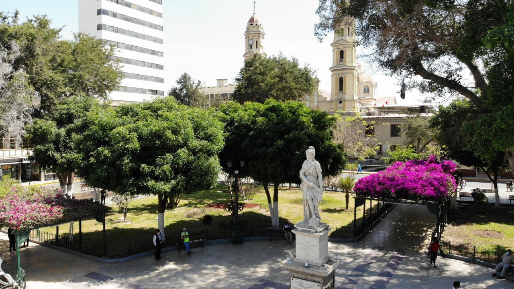

Fue fundada como “San Miguel” por los españoles entre mayo y agosto del año 1532 en un territorio denominado “Tangarará”, en la cercanía del río Chira. Mientras que, el departamento de Piura, fue fundado y constituido en el año 1861 durante el gobierno de Ramón Castilla. En este proceso, se le asignaron 3 provincias: Ayabaca, Piura y Paita.
Culturas que habitaron
Cultura Tallán
Ubicación
Fue una antigua civilización peruana pequeña en comparación con las demás culturas prehispánicas. Dentro de los horizontes e intermedios culturales en nuestra historia, los Tallán se encuentran en el intermedio tardío, aproximadamente entre los años 500 d.C hasta el año 1500 d.C. Se ubicaron entre Piura y Tumbes, llegando hasta Lambayeque y parte sur de Ecuador.
Sociedad
La sociedad Tallán se caracterizaba por su organización social jerárquica, donde cada clase tenía niveles de poder. Era liderada por jefes y sacerdotes que influenciaron sobre la población, reflejando una compleja organización que marcaba las relaciones dentro de la comunidad.
Divinidades
Se trataba de una cultura sumamente religiosa que veneraba divinidades presentes en mitos y leyendas, variando en función de su etnia. Veneraban a personajes mitológicos como Ñaricwalac, Malco y Mec-Nom, y rendían culto a la luna, considerada más poderosa que el sol por su presencia tanto de día como de noche, siendo protectora de los caminantes en el desierto. Otros dioses incluían a Hualac o Walac, asociado con los agricultores; Watán o Guatán, dios de los pescadores; Huamancanfac, dios del guano; Patá, el primer pez; Sitán, representante del remolino o cascada de agua; y las conchas, consideradas como hijas del dios del mar.
Aportes culturales
La cultura Tallán en el Perú realizó importantes aportes culturales:
Agricultura: Destacaron en la producción de maíz y algodón, siendo este último fundamental para su industria textil. Además, cultivaron guayabas, lúcumas, pepinos y paltas, diversificando la agricultura en la región y los recursos de la cultura.
Pesca: Se beneficiaron de su ubicación cerca del mar, permitiendo desarrollar una importante actividad pesquera. Utilizando redes y balsas, pescaban especies como la caballa, la trucha y el bagre, asegurando así una fuente de alimento.
Ganadería: Domesticaron principalmente auquénidos, los cuales brindaron grandes satisfacciones a la población. Estos animales proporcionaron transporte de sus productos y alimento para la población.
Arquitectura: Edificaron templos religiosos en áreas específicas. Adoraron al sol y a sus ídolos de piedra, que llamaron Guantan. Tuvieron también imágenes de madera, hechas a manera de figura con sus mitras.
Cerámica: Su cerámica guarda cierta relación con culturas como la Chimú e Inca; sin embargo, algunos de sus rasgos propios son el moldear vasijas con paletas, el teñir con humo y las cerámicas que presentan decoraciones iconográficas.
Culto a los muertos: Veneraban a sus muertos, pensando que vivían con gran deleite en el otro mundo. El entierro de un noble era muy importante. Los nobles eran enterrados en grandes tumbas con espacios para acompañantes. El entierro incluía el sometimiento al xati, una especie de suicidio colectivo de los acompañantes del noble para servirlo en el otro mundo.
Cultura Vicús
Ubicación
Se ubicaron en lo que es actualmente la ciudad de Chulucanas, en las provincias de Morropón, Ayabaca y Huancabamba. Duraron desde el año 200 a.C hasta el 400 d.C.
Sociedad
Su sociedad era jerarquizada, con bases teocráticas y militaristas. Se organizaban en monarcas y nobles, comerciantes, agricultores y esclavos. Su sede principal se encontraba en el cerro Vicús. Dominando la costa norte del departamento y parte de Lambayeque. Los pobladores eran principalmente artistas y artesanos, los cuales transmitían sus técnicas y estilos cerámicos.
Divinidades
Su divinidad principal fue Aia Paec, también conocido como “el degollador”, el cual se originó de los Mochica. Era un ser antropomorfo con colmillos de felino. Se consideraba que favorecía a las cosechas y era capaz de transformar a los humanos en demonios. Recibía sacrificios en ciertas ceremonias hechas por la cultura. Otras divinidades eran el mar, ya que creían que ahí vivían sus dioses y el sol, ya que creían que por las noches entraba en el mar y salía ileso al llegar la mañana.
Aportes culturales
La cultura Vicús realizó importantes aportes culturales:
Cerámica: Fue su expresión cultural más representativa y principal aporte por su belleza y técnica. Tuvieron fuertes influencias en los Chavín. Sus temáticas eran ollas, platos y vasijas de uso diario o ceremoniales. Tuvo 3 etapas principales: Vicús negativo, Vicús blanco sobre rojo, y Vicús engobados monocromos.
Escultura: Representaba escenas diarias, figuras humanas y animales. Sus creaciones humanas y animales eran muy exageradas, con ojos abultados, brazos alargados y nariz prominente y ganchuda. Además, también realizaban creativas figuras zoomorfas y antropomorfas.
Arquitectura: Estaba organizada en función a la posición que presentaban los astros como el sol, la luna y las estrellas. Sus construcciones estaban hechas de barro y algunas de adobe, con tragaluces y techos inclinados. Sus construcciones más representativas fueron los centros ceremoniales y sus tumbas.
Metalurgia: Utilizaban el oro, plata, cobre, aleaciones y piedras preciosas para crear diversos objetos como máscaras, cuentas, discos, collares, pectorales, entre otros.
Textilería: Tenían gran habilidad para la textilería, aunque no era tan llamativa como su cerámica y metalurgia. Sus prendas eran simples para el uso diario y unas más elaboradas para ocasiones especiales.
Video promocional
Línea de Tiempo de Piura
Conoce los hitos más importantes de la historia de Piura a lo largo del tiempo.

12,000 a.C: Primeros vestigios humanos encontrados. Estos hallazgos indican la presencia de grupos principalmente pesqueros.
1800 a.C: Primeros humanos que trabajaron en la tierra, dando inicio a la agrícultura en el departamento.
Vicus: Abarcó desde fines del año 100 a.C. hasta el 400 d.C.
Tallán: Se extienden desde el 500 d.C hasta el 1500 d.C.
Siglo XII: La expansión del imperio incaico llega a Piura.
1532: Pizarro funda la ciudad de San Miguel de Piura en Tangarará.
1588: La ciudad se establece definitivamente.
Colonia: El puerto de Paita fue un importante punto comercial entre Perú y Europa. Aumento en la producción de algodón nativo y ganado caprino.
1821: Se declara la independencia de Piura.
1837: Piura fue elevada a la categoría de Provincia Litora
1861: Ramón Castilla crea el departamento de Piura. Además, se consolida como productora y exportadora de algodón pima.
1871: Se descubre petróleo en Talara, y se establece la primera refinería de petróleo en la ciudad